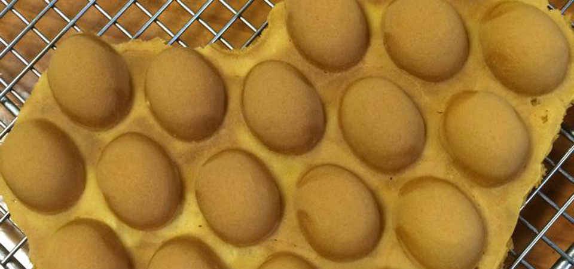
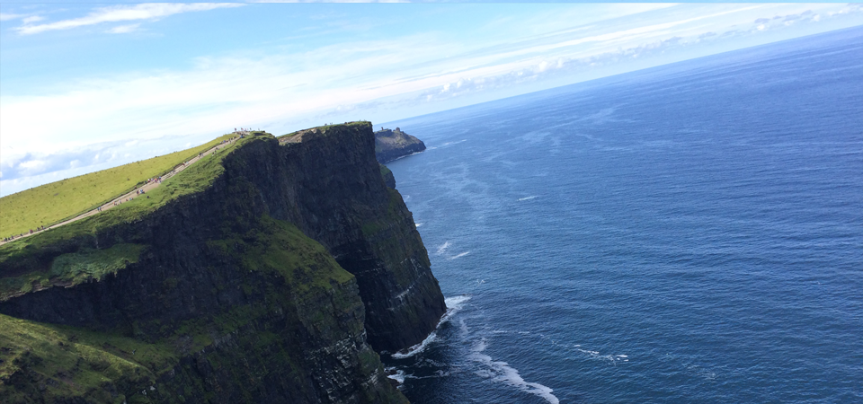
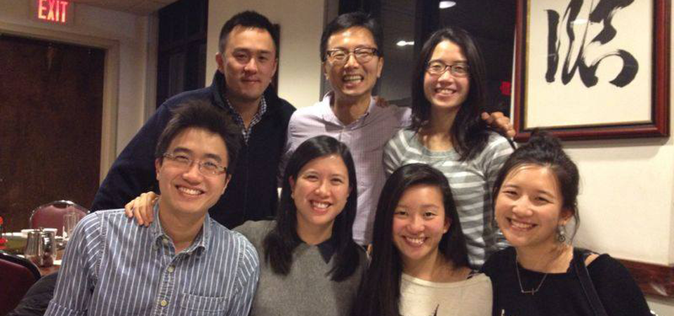
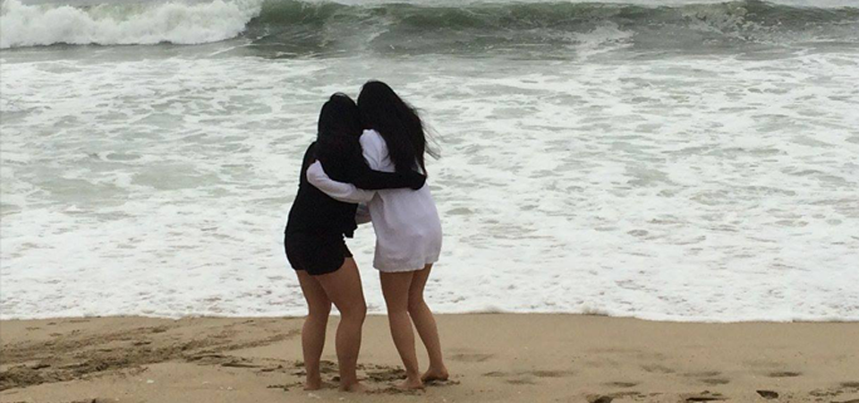

Photo: Egg Puffs from Hong Kong
Both of my parents grew up in Hong Kong, China, and came to the United States for their college educations. Growing up in a Chinese household, there were plenty of food and customs that came along with the culture. I had the opportunity to travel to Hong Kong many times either during my Christmas break or summer vacation. One of my favorite authentic snacks: egg puffs.
Photo: Final Fantasy VII Crisis Core
Video games have always been a fun to relax and enjoy alternate realities with the imagination. I loved playing video games when I was growing up, and one of my all time favorite series of role-playing games was this series called Final Fantasy. I am a huge fan of fantasies filled with warriors and dragons. My favorite game for the PSP: Final Fantasy VII Crisis Core.

Photo: Cliffs of Moher (Ireland)
This past summer 2015, I studied abroad in Dublin, Ireland. It was one of the funnest and most rewarding experiences I have ever had, and could not have chosen a better place to live in for two months. I traveled to many places, and saw new sights that only further enhanced my love for traveling and exploring new beauties that the world has to offer. My favorite place in Ireland: the Cliffs of Moher.

Photo: Cousins (incomplete)
My family is one of the friendliest and funnest group of people I know, and I am thankful to have such a large and loving one. All of my cousins are older than me, making me the youngest out of the entire family. Life was fun growing up and visiting them in Hong Kong, and now we are scattered all over the world. Although there are many cousins missing in this photograph, our smiling faces perfectly express how they all make me feel.

Photo: Roomies at the beach
As a freshman at Cal, I was lucky enough to be rooming with a friend that I had known for a very long time. She is one of the best people I know, and we never ceased to have fun together. Coping with the transition into and the years enduring college, I am so thankful for her and all the friends I have made, and I would not trade any single one of them for the world.